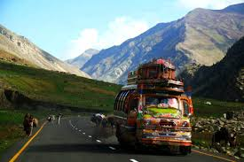
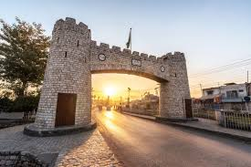
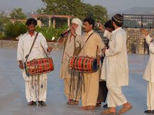
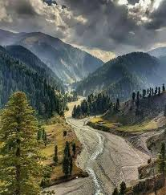

Khyber Pakhtunkhwa (KPK) is a province in northwestern Pakistan, renowned for its stunning landscapes and rich cultural heritage. Nestled in the foothills of the Hindu Kush mountains, KPK is home to majestic valleys like Swat and Hunza, which attract nature lovers and adventure seekers alike. The province has a diverse population, comprising various ethnic groups, including Pashtuns, Hindkowans, and Kohistanis, each contributing to the region's unique traditions and customs. Peshawar, the provincial capital, is one of the oldest cities in the region, steeped in history and known for its vibrant bazaars and historical sites, such as the Peshawar Museum and Bala Hisar Fort. The cultural fabric of KPK is woven with traditional music, dance, and art, reflecting the spirit of its people. Festivals like the Kalash Uchal Festival celebrate the local culture and attract visitors from around the world. KPK is also known for its rich folklore and poetry, with prominent figures like Khushal Khan Khattak contributing to its literary heritage. Despite facing challenges such as political instability and economic development issues, the province is undergoing significant changes, with investments in infrastructure and tourism. The natural beauty, cultural richness, and resilient spirit of KPK make it a vital and fascinating part of Pakistan.
Khyber Pakhtunkhwa (KPK) is also significant for its strategic location, bordering Afghanistan and serving as a vital corridor for trade and transit. The province has a rich history of resilience, with its people having navigated various challenges over the years while maintaining their cultural identity. The traditional Pashto hospitality is renowned, with locals often welcoming visitors with open arms and hearty meals. In terms of natural resources, KPK is rich in minerals and forests, which play a crucial role in the local economy. The province is also home to several national parks, such as the Ayubia National Park, which protect its unique flora and fauna. Furthermore, KPK has seen a surge in eco-tourism, with initiatives aimed at promoting sustainable travel to its picturesque landscapes. This combination of natural beauty, cultural richness, and a spirit of perseverance makes KPK a remarkable province in Pakistan, offering both challenges and opportunities for growth and development.
|  |  |  |  |
|---|